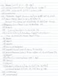

Oxford Past
Oxford, New Haven, Connecticut
Home
Cemeteries
Genealogy
Library
Email
Riverside Cemetery Map
Oxford, New Haven, CT
by Earl F. Curnan, 3rd
April 2004
Click on links below to view pages.
MAP
1 - 16
17 - 31
32 - 52
53 - 75
76 - 98
99 - 121

122 - 144
145 - 160
161 - 179
180 - 200
201 - 223
224 - 249
250 - 273
Home
Cemeteries
Genealogy
Library
Email